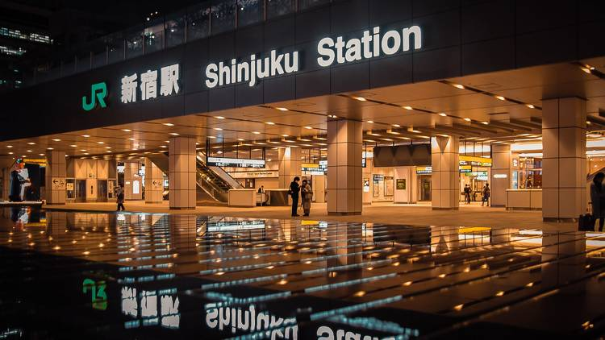

Tokyo Station serves as the cornerstone of Japan's extensive rail network, acting as a crucial hub for both local and bullet trains, facilitating seamless transit across the city and beyond. Its iconic red-brick façade stands as a testament to Japan's rapid modernization in the early 20th century, blending Western design with traditional aesthetics. Over time, the station has become more than a transport hub—it's a symbol of Tokyo's resilience and adaptability, evolving to meet the demands of a growing metropolis and its diverse populace
.jpeg )
History
Before Tokyo Station was built, the land was part of the city of Tokyo, home to local residents and businesses in a rapidly urbanizing area. The construction of the station significantly transformed the landscape, becoming a catalyst for economic growth and urban development in the heart of the capital. While Tokyo Station has endured earthquakes and wartime bombings, resulting in partial collapses and reconstructions, a complete collapse would severely disrupt Japan's transportation network, impact daily commutes, tourism, and the economy, highlighting its vital role in the nation's infrastructure.
A world without Tokyo Station?
Imagining a world without Tokyo Station or similar infrastructure invites us to envision alternative methods of connecting cities and cultures. It could mean a shift towards more sustainable, decentralized, or even virtual modes of interaction and transportation. In such a world, the focus might be on enhancing local communities and ecosystems, relying on technology to bridge distances in innovative ways, and prioritizing environmental and social well-being over the convenience of rapid transit.
The Art
The art of Tokyo station can play a pivotal role in reimagining infrastructures by offering creative visions that challenge conventional designs and functionalities. Artists and designers can envision spaces that integrate nature and technology, creating eco-friendly and aesthetically pleasing environments. Through installations, conceptual art, and architectural innovations, the arts can propose infrastructures that prioritize sustainability, community engagement, and adaptability to future needs, inspiring shifts towards more holistic and inclusive urban development.
.webp)